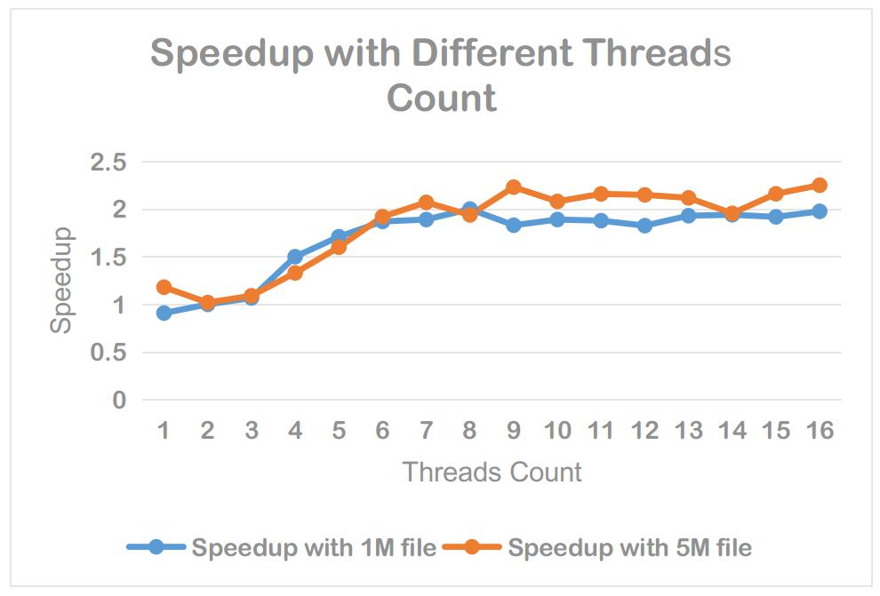

A Parallel HTML5 Parser based on Jsoup
Download .jar Download Source .zip Download Source .tar.gzOn Linux, Intel® Core™ i7-4710MQ CPU @ 2.50GHz × 8, HPar achieves speedups as high as 2.3x.
The structure parser return is compatible to Jsoup 1.9.1. All you need to do is include this jar file and Jsoup 1.9.1, then enjoy it.
More information please check out at: https://github.com/sunxfancy/HPar
String data = "<html></html>";
// a new paralleled Jsoup with 8 threads
ParallelJsoup pj = new ParallelJsoup(data, 8);
// parsing the HTML data
Document document = pj.parse();
Licences - MIT